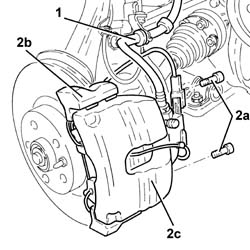
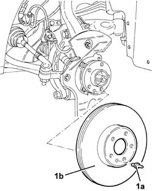
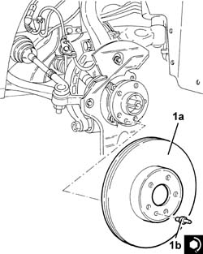
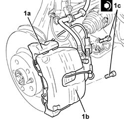

3310A48 front brake disc - r r
- Path
- Procedures > 33 BRAKING SYSTEM > 3310 DISC BRAKES > 3310A FRONT DISC BRAKES > 3310A48 front brake disc - r r
- Kind
- repair procedure (removal / refitting; the operation number is the code)
- Applies to
- all engines; all production periods
- Interactive page
- https://sloeber94.github.io/elrnDB-a147/en/#/3025194
Applies to: engines: 1.6 TS, 2.0 TS, 1.9 JTD 8V, 1.9 JTD 16V; all production periods
 Removing
Removing
 Refitting
RefittingPosition the vehicle on the ramp.
Proceed with removal 4450B10 Front WHEEL (one) - R.R. .
1. Release the front brake caliper flexible pipe from the mounting bracket.
2. Undo the bolts (2a) and move the bracket (2b) complete with brake caliper (2c) without disconnecting the pipe.

Applies to: engines: 1.6 TS, 2.0 TS, 1.9 JTD 8V, 1.9 JTD 16V; all production periods
1. Unscrew the pin (1a) and remove the front brake disc (1b).

Applies to: engines: 1.6 TS, 2.0 TS, 1.9 JTD 8V, 1.9 JTD 16V; all production periods
Refitting
Removing1. Refit the front brake disc (1a) in its seating and tighten its bolt (1b) to the specified torque.
 | Fastening | Component | Ø | Value (daNm) |
|---|---|---|---|---|
1b | Pin | FRONT BRAKE DISC. | M8 | (Wheel hub side) 1.0 ÷ 1.4 |

Applies to: engines: 1.6 TS, 2.0 TS, 1.9 JTD 8V, 1.9 JTD 16V; all production periods
1. Place the bracket (1a) complete with brake caliper (1b) in its seating and tighten the bolts (1c) to the specified torque.
| Fastening | Component | Ø | Value (daNm) |
|---|---|---|---|---|
1c | Bolt | FRONT BRAKE CALIPER BRACKET | M12 | (Front steering knuckle side) 11.1 ÷ 12.3 |

Applies to: engines: 1.6 TS, 2.0 TS, 1.9 JTD 8V, 1.9 JTD 16V; all production periods
Fit the front brake caliper flexible pipe to the mounting bracket.
Proceed with refitting 4450B10 Front WHEEL (one) - R.R. .
Remove the car from the ramps.
Applies to: engines: 3.2 V6; all production periods
Removing
RefittingPosition the vehicle on the ramp.
Ensure that the ignition key is in the OFF position, then disconnect the negative battery terminal (-).
 | Name | Connector |
|---|---|---|
- | Battery |
Proceed with removal 4450B10 Front WHEEL (one) - R.R. .
Proceed with removal 3310A30 FRONT BRAKE CALIPER (one) - R.R. .
1. Unscrew the pin (1a) and remove the front brake disc (1b).
Applies to: engines: 3.2 V6; all production periods
Refitting
Removing1. Refit the front brake disc (1a) in its seating and tighten its bolt (1b) to the specified torque.
| Fastening | Component | Ø | Value (daNm) |
|---|---|---|---|---|
1b | Pin | FRONT BRAKE DISC. | M8 | (Wheel hub side) 1.0 ÷ 1.4 |
Applies to: engines: 3.2 V6; all production periods
Proceed with refitting 3310A30 FRONT BRAKE CALIPER (one) - R.R. .
Top up the brake-clutch fluid level 0010T64 brake and or clutch fluid check level and top up as necessary .
Bleed the air from the hydraulic braking system 0010T65 hydraulic brake system bleed air .
Proceed with refitting 4450B10 Front WHEEL (one) - R.R. .
Connect the negative (-) battery terminal.
Remove the car from the ramps.
Topics linked from this page (5)
- 0010T64 brake and or clutch fluid check level and top up as necessary
- 0010T65 hydraulic brake system bleed air
- 3310A30 FRONT BRAKE CALIPER (one) - R.R.
- 4450B10 Front WHEEL (one) - R.R.
- A1B Battery ( Connectors )